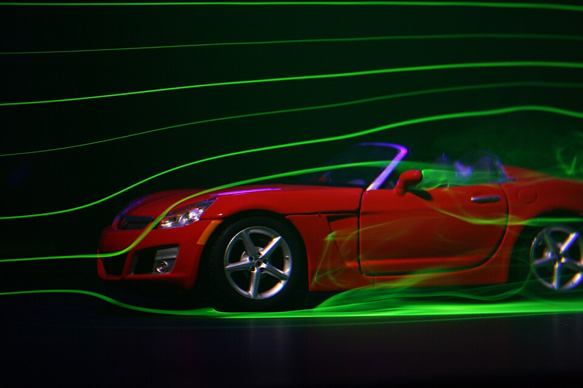

Por qué un auto gasta tanto en empujar el aire
En la autopista, más de la mitad de la potencia de un auto se usa para vencer la resistencia del aire [1]. Por eso la velocidad de crucero más económica no es la de la autopista, sino de unos 70 a 80 km/h [1]. El aire parece no pesar nada, pero un auto tiene que apartar toneladas de él por cada kilómetro.
La fuerza de arrastre se escribe con el coeficiente C, que se determina de manera experimental, por lo general en un túnel de viento [1][2]:
Si la fuerza va con el cuadrado de la velocidad, la potencia va con el cubo. Duplicar la velocidad multiplica por cuatro la fuerza y por ocho la potencia. Con C = 0,30, un área frontal de 2,2 m² y una densidad de 1,21 kg/m³, el arrastre a 120 km/h es de unos 440 newtons y consume unos 15 kW; a 100 km/h son 310 newtons y unos 9 kW (cálculos propios). Bajar de 120 a 100 km/h le quita más del 40 % a la potencia que se lleva el aire.
El coeficiente depende de la forma. El libro de OpenStax lista algunos valores típicos: un perfil de ala, 0,05; un Toyota Camry, 0,28; un Ford Focus, 0,32; una pickup Dodge Ram, 0,43; una esfera, 0,45; un Hummer H2, 0,64 [1]. Con la misma área frontal, el Hummer necesitaría a 120 km/h más del doble de fuerza que el Camry (un cálculo propio).
El agujero en el aire: al pasar, un auto abre un hueco en el aire, y el aire tarda en volver a cerrarlo. Detrás queda una estela, una zona de baja presión que tira del auto hacia atrás. El trabajo del ingeniero es que ese hueco sea lo más chico posible, cerrando el flujo suavemente en la cola.
El arrastre tiene dos partes: de presión y de fricción. T. J. Marklund y L. Löfdahl, de la Universidad Tecnológica de Chalmers, citan una regla práctica: en un auto de pasajeros, entre el 80 y el 90 % del arrastre es de presión, y el resto, de fricción [3]. En un ala finita es al revés, con alrededor del 95 % de fricción [3]. Por eso se dice que un auto es un cuerpo romo y un ala, un cuerpo fuselado [3].
Eso cambia dónde vale la pena trabajar. Pulir la pintura ayuda poco; lo que importa es la forma de la parte de atrás, donde se produce la separación de la capa límite y nace la estela. Es la misma física de la fuerza de arrastre sobre cualquier objeto.

La aerodinámica es solo una parte del balance. El sitio oficial de economía de combustible de Estados Unidos estima que solo entre el 12 y el 30 % de la energía del combustible de un vehículo convencional llega a moverlo, según el ciclo de manejo; el resto se pierde en el motor y la transmisión o alimenta los accesorios [4]. Pero cada newton de arrastre evitado se ahorra multiplicado por todas esas pérdidas (un razonamiento propio). Según la misma fuente, las formas más suaves ya redujeron bastante el arrastre, y todavía sería posible reducirlo otro 20 a 30 % [4]. Y a las velocidades de autopista, el arrastre es la mayor fuerza de resistencia de un auto [3].
La biomimética dejó una historia con moraleja. El pez caja, con su armadura de placas, se volvió un modelo del diseño aerodinámico, porque se le atribuía una reducción del arrastre y una estabilización automática del rumbo, y por eso inspiró diseños de autos [5]. Fue la base del auto conceptual Mercedes-Benz Bionic [6].
En 2015, S. Van Wassenbergh y sus colegas midieron modelos impresos en 3D en un tanque de agua y lo simularon por computadora, y dieron vuelta varias suposiciones [5]. Los coeficientes de arrastre mínimos fueron de 0,27 y 0,31 según la especie, bastante más altos que el de peces de forma más típica: un cíclido, con la misma simulación, ronda 0,15 [5]. Además, la fuerza del agua sobre la armadura resultó desestabilizadora, no estabilizadora. Eso tiene sentido: estos peces viven entre corales y necesitan maniobrar, y la inestabilidad favorece los giros [5].
Entonces, ¿cómo logró Mercedes un auto de bajo arrastre? S. Farina y A. Summers proponen en Nature que el auto tiene una trompa redondeada y no reproduce la parte delantera en forma de caja, responsable del efecto desestabilizador [6]. Un comunicado de la Universidad de Groningen fue más directo: el diseño se basó en una interpretación incorrecta de las características del pez [7].
La moraleja: un pez caja gana a una caja real o a una esfera, que tienen coeficientes de 1,05 y 0,47 a un Reynolds parecido [5]. La evolución no optimiza una sola variable: su armadura sirve para defenderse de predadores, y el precio es un mayor arrastre [5]. Copiar la naturaleza exige preguntarse primero qué problema resolvió.
A velocidad de autopista, un auto gasta más de la mitad de su potencia en empujar aire, y esa potencia crece con el cubo de la velocidad. Casi todo ese arrastre viene de la diferencia de presión entre la trompa y la cola, así que la forma de atrás importa más que la textura de la superficie. Y la historia del pez caja recuerda que hasta una buena idea de diseño conviene comprobarla con medidas.
Pregunta para la comunidad: Muchos camiones llevan un deflector sobre la cabina. Con lo que viste sobre el arrastre de presión, ¿qué creés que busca? ¿Y por qué podría tener sentido, si el arrastre se decide sobre todo en la parte de atrás?